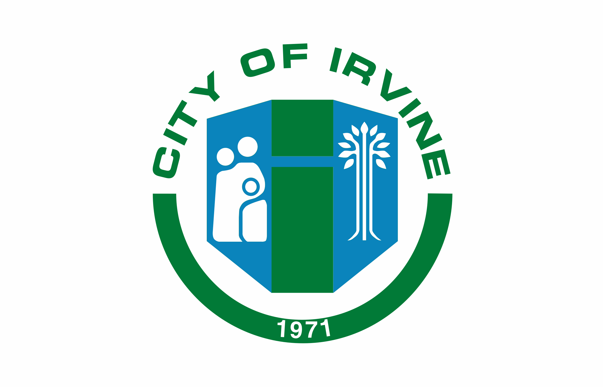
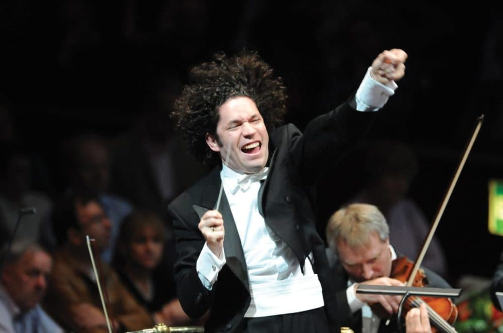
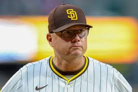

 My name is Dylan Kim. I am a 17 year old junior at CCA and originally from Korea. If there is one common characteristic throughout my life, it would be change. Changing environments and circumstances have fundamentally changed my perspectives on life and personal matters. This adaptation to change and embracing hardship can be noticed throughout numerous examples throughout my life. For example, I’m not even sure how I’ve made meaningful friendships despite having moved schools at least five times.
 Over the years, I’ve picked up various interests, one of them being clarinet and classical music. Initially, I was forced into picking up an instrument by my elementary school wasn’t even very fond of it. However, as I dedicate more time to practice and meeting new people with an expertise in this instrument, I have begun noticing the immense value of it. I’ve played in various bands and orchestras throughout San Diego and the state. I’ve found myself looking forward to attending San Diego Symphony concerts every weekend, studying the music they are going to play before attending the concerts. Music is something that has brought solace and great friends into my life. It serves as a peaceful getaway from the stresses of everyday life
 Another interest I have is in baseball. Watching baseball, utterly failing to play baseball, anything you can name. I played little league, but I was the backup 3rd base for the team, so I decided to just quit and stick to the watching part. Admittedly, even though the Padres haven’t won much ever, I am still proud to have not walked over the pond to become of a Dodgers fan. Though winning is fun, the communal aspect of being a baseball fan is much more appealing. Going to games with your friends, watching your team win or lose on a Tuesday night, it creates a bond between the fanbase that is much more meaningful than winning a couple games. However, Preller better work his magic this upcoming season.